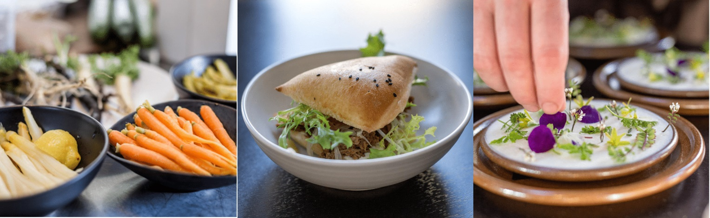
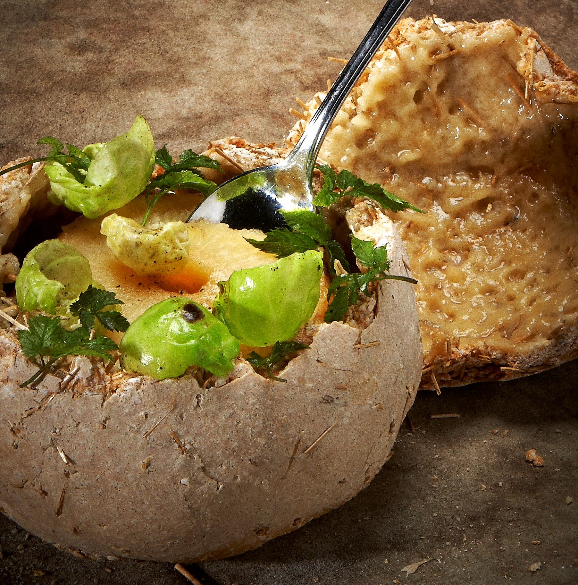

Produktlancering

Hvad kan Gastronomisk Innovation?

Gastronomisk Innovation er, som en voksende organisation bestående af kokke og madlavnings-
entusiaster, en aspirerende front-figur inden for udviklingen af madlavningskunst.
Som følge af vores arbejde inde for innovation, bæredygtighed og nytænking, har vi i
arbejdet tæt sammen med andre virksomheder i udviklingen af events og koncepter med
gastronomi som omdrejningspunkt. Vi kan stå for hele eller dele af konceptudviklingen
og trækker på et stort netværk af dygtige specialister i det omfang,
der er behov for det – ingen opgave er for lille eller stor.
Vi kan kontaktes gennem hjemmesidens kontaktform eller på de sociale medier.